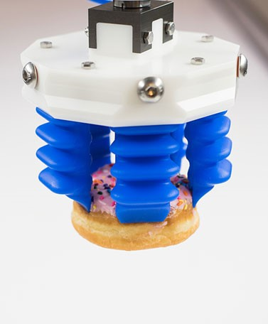
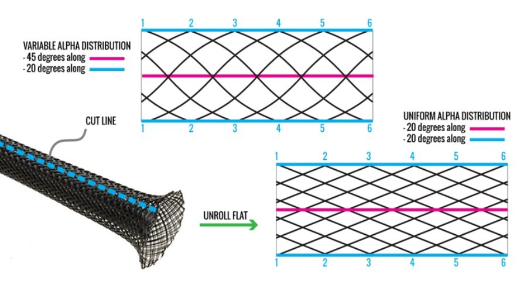
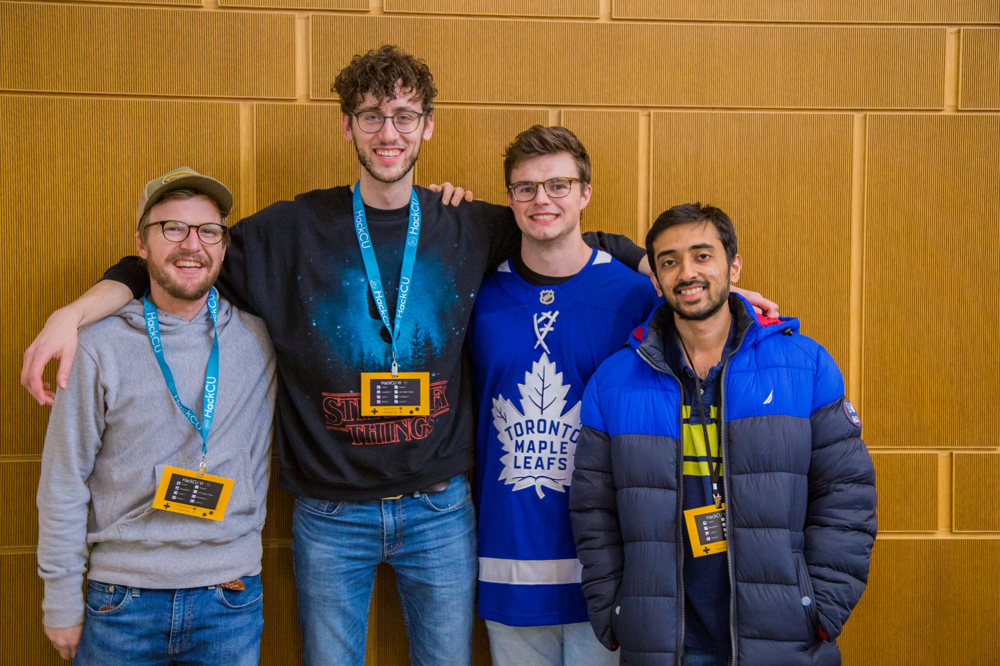

Learning By Schooling
Graduate Design: Co-Op with Medtronic
Graduate Design is the year-long capstone course in CU's Mechanical Engineering Master's Design sub-track. Local engineering companies 'hire'
student groups to work on one of the firm's current projects. My teammates and I had the good fortune of working with
Medtronic Surgical
on an original medical device design.
Unfortunately Non-Disclosure Agreements prevent me from sharing many project details, as I am exceptionally proud of the engineering and
creativity our team generated in the development process.
In brief, we designed an intuitive, mechanical control handle for integration with a robotic laparoscopic vessel sealing device. We conceived
numerous concepts and built countless prototypes in order to down-select, de-risk, test, and validate individual subsystem performance and integration.
Operating during the COVID-19 pandemic, effective communication was paramount as we determined the best path forwards and collaborated on CAD models.
We worked with various manufacturers and raw material suppliers to stay on top of lead-times and produce the best quality deliverables possible.
In addition to the incessant prototyping, we designed many parts for compliance with mass-production processes.
I chose CU for my Master's in large part because of the Graduate Design program and it did not disappoint. It was a phenomenal learning experience, and I
could not have asked for a better project, client, or team.
Industrial Automation

After completing
Dr. Shalom Ruben's
Feedback Control course, I was excited to learn practical applications of control theory through hands-on
project work in his Industrial Automation class the following semester.
Soft Robotics


Dr. Christoph Keplinger's
class on the application of non-rigid materials in robotics and
electronics was equal parts informative and inspiring. The
pot-pourri of topics included polymer chemistry,
dialectrics, passive energy generation, and everything
inbetween. I learned a great deal about the current
challenges facing robotics today, and how the burgeoning
field of soft machines might solve them. As part of the
course, Dr. Keplinger gave us access to his lab to build two
simple soft actuators: the
Donut HASEL
and
DEA.
Each group had to document the fabrication process with an
'entertaining' video (above).
For the final project, groups composed
a research paper on a soft robotics topic of their choosing.
Beyond explaining the topic and reporting on
current research areas, we composed a research
proposal of our own for the technology. My group
chose
McKibben Muscles.
Our research proposal investigated the potential for
asymmetric braid patterns to generate curved actuation paths.
According to Dr. Keplinger: "[He] would fund that."
Finite Element Analysis


Dr. Christoph Keplinger's
class on application of non-rigid materials in robotics and
electronics was equal parts informative and inspiring.
Course material focused on the benefits of emerging
technologies and potential applications.
CAD & CNC Machining
During my transition from Doodle Design to Elfy's Inc, I
enrolled in De Anza College's
Design and Manufacturing Technologies
department to learn advanced CAD modeling techniques and
gain hands-on manufacturing experience. The resources there
were phenomenal. I enjoyed the community so much, I
continued taking night and weekend classes even after
starting at Elfy's. Before I knew it I had completed all
coursework for two of the department A.S degrees - the CAD &
Drafting, and R&D Machinist tracks.
At De Anza I took dedicated courses on surface modeling in SolidWorks, Creo Parametric, GD&T, CNC
lathe and mill operation (3,4, & 5-axis), advanced manual
machine shop, dimensional metrology/CMM operation,
MasterCAM programming, and much more.